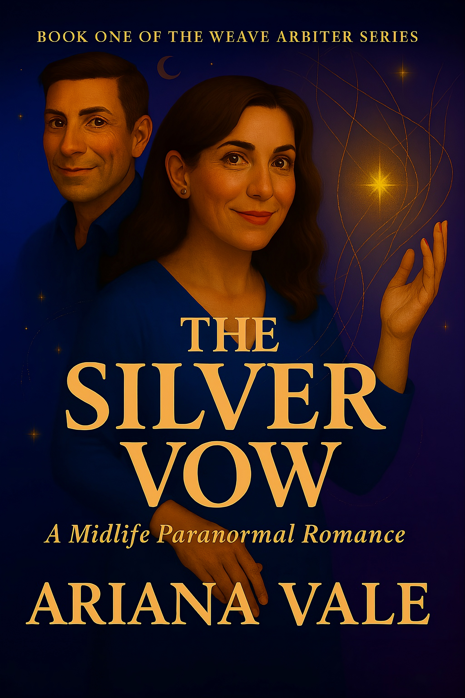

Paranormal Women's Fiction — Six Women. Six Gifts. One Ancient Moor.

Nora Ashby inherits a house on the Yorkshire moors and a gift she has been managing as a liability for nineteen years. In Thornfield-on-Moor, she finds the one place that has been waiting for exactly what she is.
Ariana Vale writes paranormal women's fiction about women over forty who discover that what they have been calling intuition, sensitivity, or professional instinct has always been something else — something older, and more specific.
The Thornfield Chronicles follows six women who arrive in a North Yorkshire village in the aftermath of professional crises, each carrying a gift she has been managing as a liability. Together, they find the one place that has been waiting for exactly what they are.
The series is now complete. All six books are available on Amazon and Kindle Unlimited.